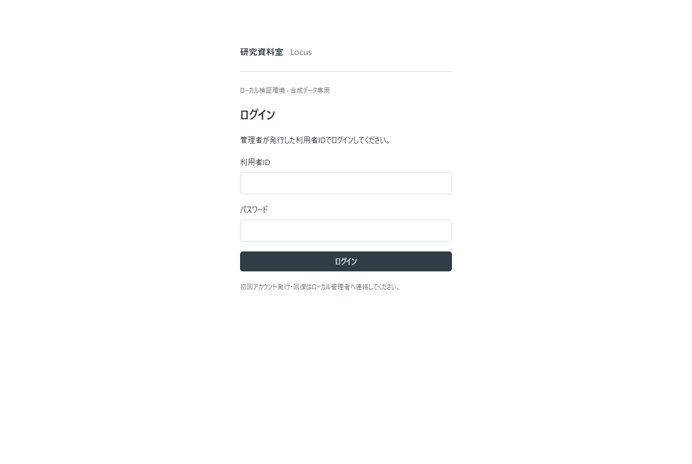
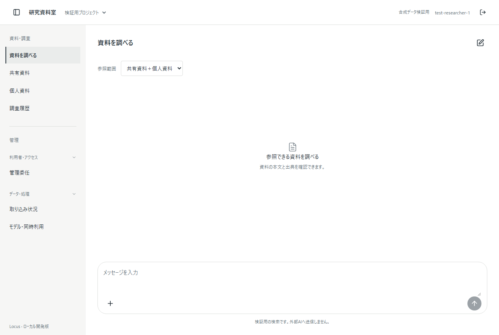
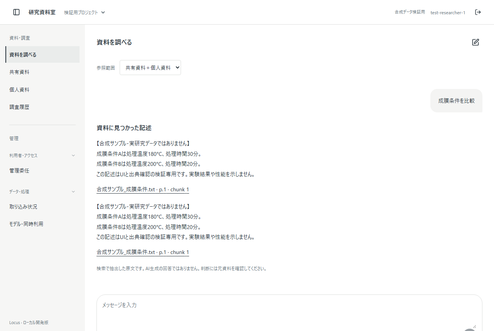
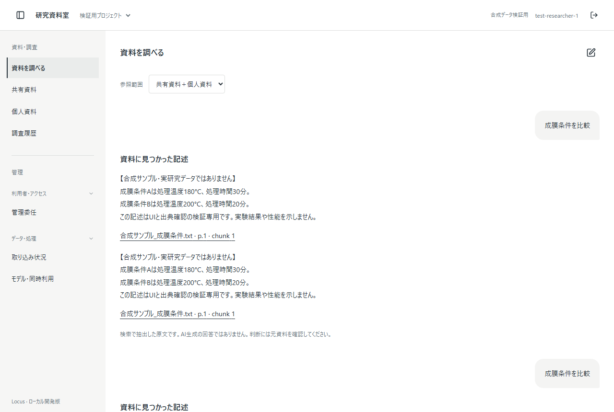
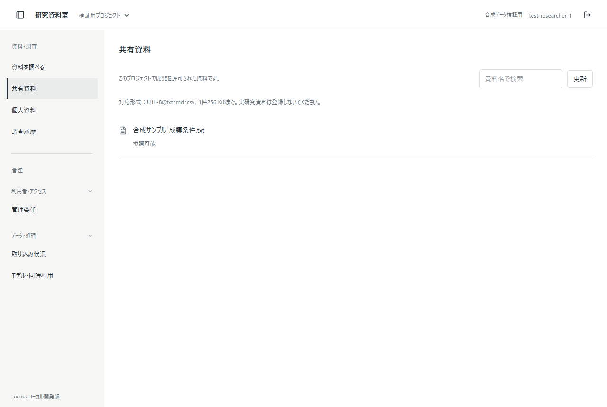
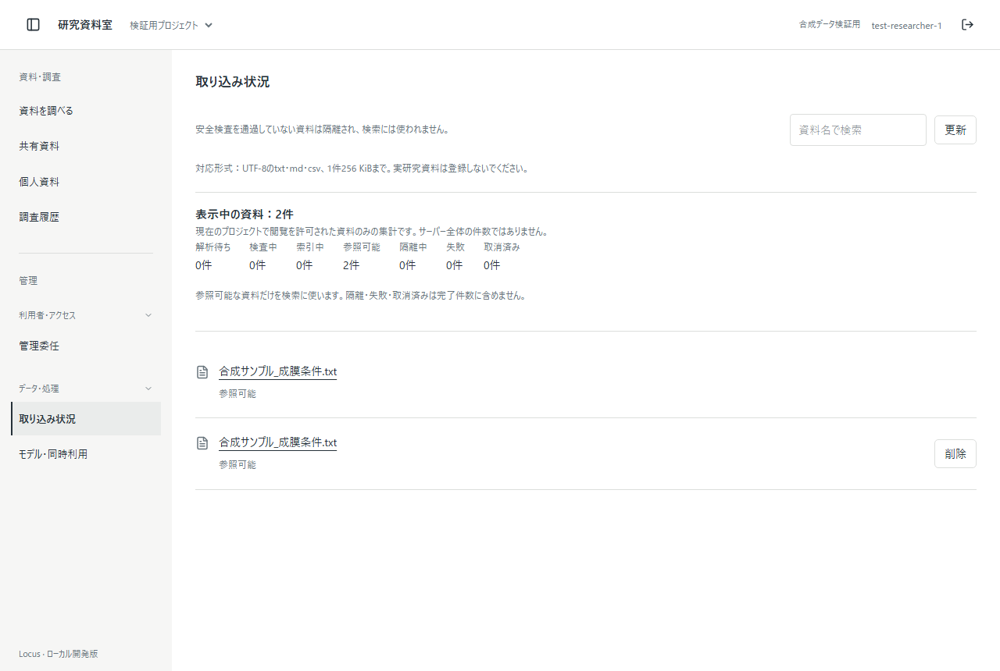
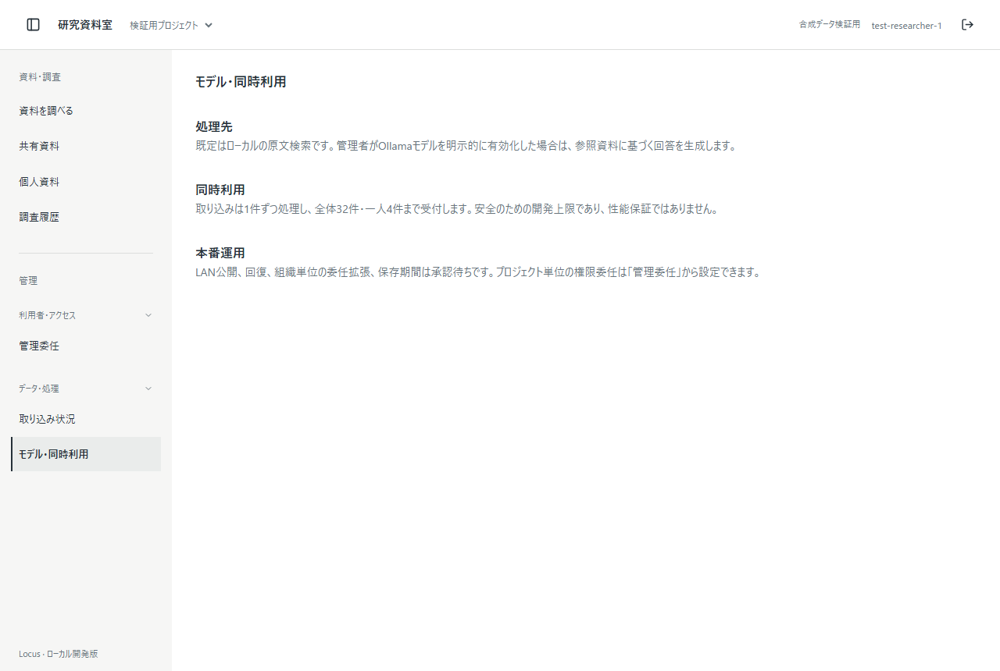
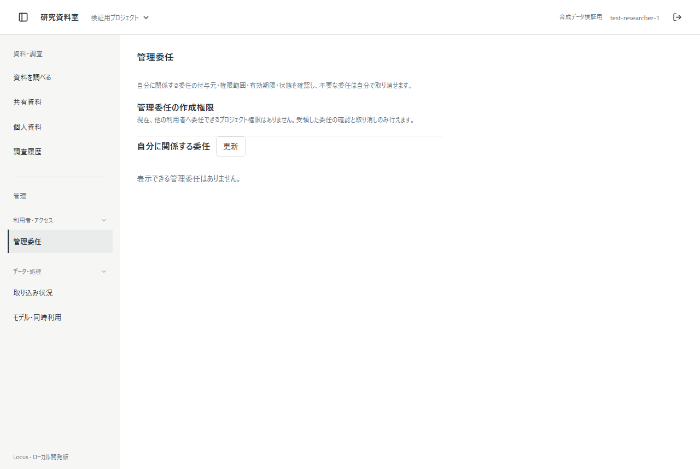
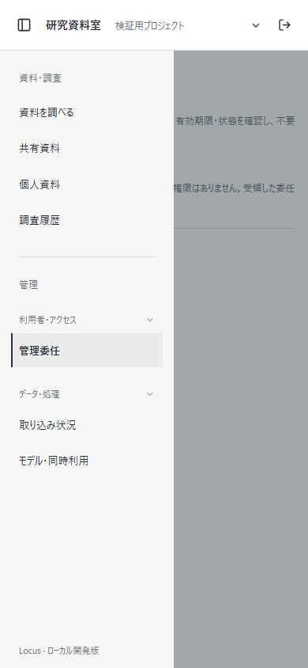
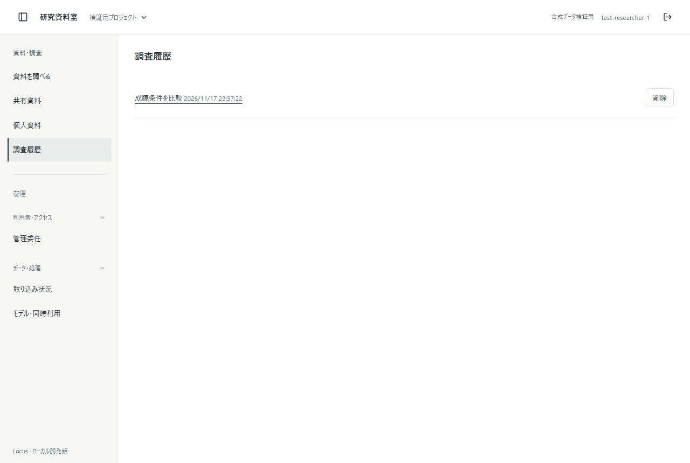

2026-11-17 時点の実装を、実ブラウザで撮影したものです。合成データのみ。
これは「いま動いているもの」です。プレビュー（試作）で見ていただいた opencode 式の呼び名・設定ダイアログ・ダークモードはまだ入っていません。その差を見比べるための資料です。
撮影はループを止めずに行うため、別ポート（UI 5274 / API 8100）の使い捨てクローンで実施しました。本番の設定は変えていません。




T-PH6-111 で修正中（T-PH6-109 待ち）。

T-PH5-101）はAPI のみ実装済みで、画面はまだ繋がっていません。
T-PH6-102）と使用中/全本数の表示（T-PH6-107）はマージ済みですが、この画面には出ていません。検査用データが値を返していない可能性もあり、要確認。


T-PH6-112）。| 項目 | いまの実装 | 決まっている形 | 担当 |
|---|---|---|---|
| 製品名 | 研究資料室 Locus（併記） | Locus のみ | T-PH6-109 |
| 上部の帯 | スクロールで画面外へ出る | 固定 | T-PH6-109 |
| 入力欄 | 文書末尾。会話と一緒に流れる | 画面下部に固定 | T-PH6-111 |
| 参照範囲 | 本文最上部の select | 入力欄の中のドロップダウン | T-PH6-111 / 117 |
| ナビ | 資料を調べる / 共有 / 個人 / 調査履歴 + 管理 8 項目 | 新しいチャット → 会話 → 資料。設定は歯車のダイアログ | T-PH6-112 |
| 設定 | サイドバーに展開 | 左下アカウント＋歯車 → ダイアログ（<dialog>） | T-PH6-112 / 116 |
| ダークモード | 無し | ライト / システム / ダーク | T-PH6-110 / 118 |
| 注意書き | 回答ごとのフットノートのみ | チャット上部に常時表示 | T-PH6-115 |
| 文字サイズ | :root { font-size:14px } が OS 設定を無効化 | rem 化して OS に従う | T-PH6-119 |